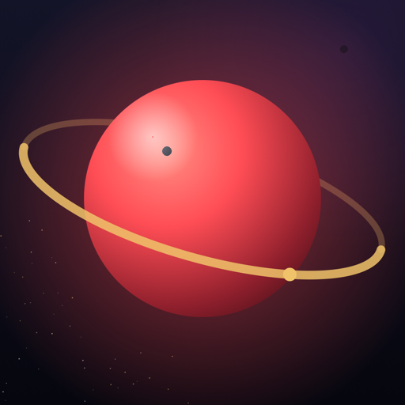
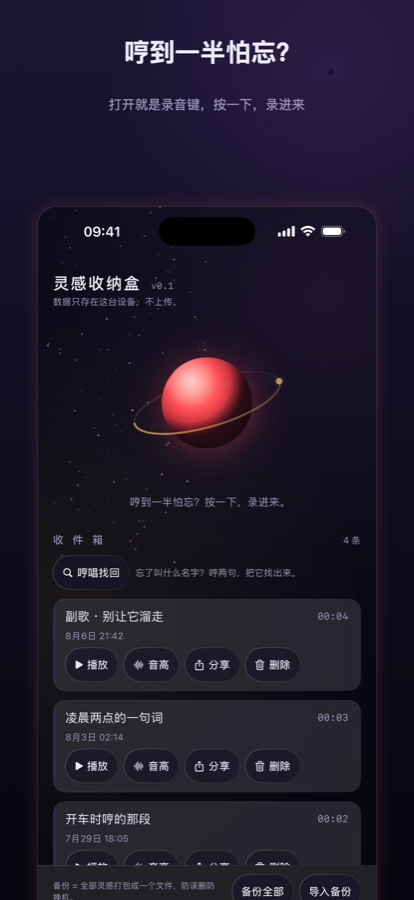
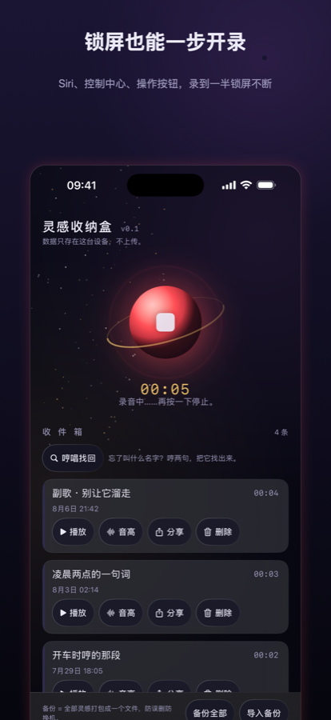
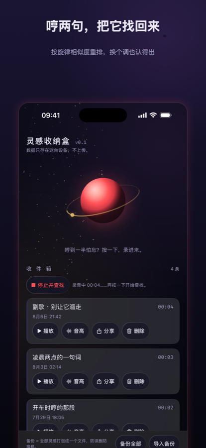
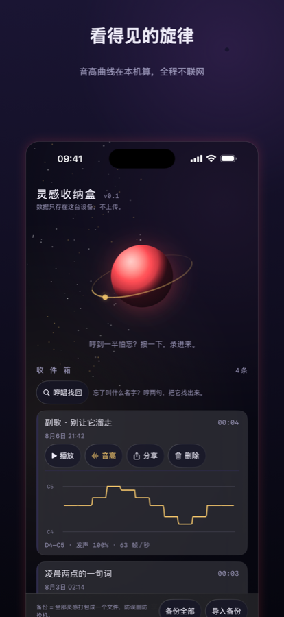

哼一段，别丢了
给写歌的人的灵感保险箱。开车时冒出来的旋律、凌晨两点的一句词——先抓住，再说别的。
App Store 下载 隐私政策你记得那段旋律，但不记得它叫什么。
点「哼唱找回」，把那句再哼一遍，收件箱按旋律相似度重排，最像的排在最前面。换个调、快一点慢一点、记不太清了，都还认得出来。音高提取（YIN）和相似度比对（DTW）全部在你手机上完成。
锁屏小组件、控制中心、Siri、操作按钮，四个入口都能一步开录，不用解锁翻找。录到一半锁屏也不会断，后台继续录，直到你按停。
每条录音都能展开音高曲线，看清你哼的到底是哪几个音、音域跨了多大。
没有服务器，没有账号，没有广告，没有统计埋点，App 全程不联网——这不是隐私政策写得好，是这个 App 在物理上做不到上传。「备份全部」一键打包成一个文件，防误删、防换机。



